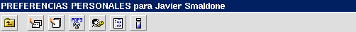
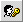

|
La Barra de Preferencias muestra las distintas opciones para la configuración de preferencias personales del usuario.
La Barra de Preferencias:

Tabla de referencia:
| Elemento/Ícono |
Nombre/Texto alternativo |
Acción que realiza |
![Volver a [bandeja]](../../images/buttons/up.gif) | Volver a [bandeja] | Vuelve a la última bandeja en uso. |
 | Editar direcciones de correo | Permite editar sus direcciones de correo personales. |
 | Editar membretes | Permite editar los membretes utilizados al responder mensajes. |
 | Configuración POP3 | Administración de cuentas externas de correo POP3. |
|
 | Cambiar contraseña | Permite cambiar su contraseña de acceso a Open Webmail. |
 | Ver Historial | Muestra el historial de su actividad en Open Webmail. |
 | Acerca de | Muestra información sobre el servidor, Open Webmail y su navegador web. |
Para mayor información sobre la selección de sus preferencias, vea
Configurando sus Preferencias
.
|